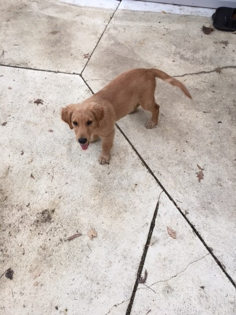
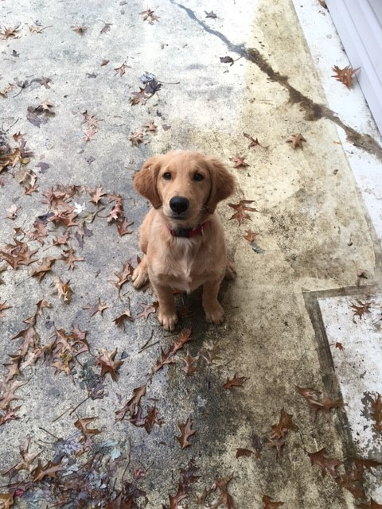
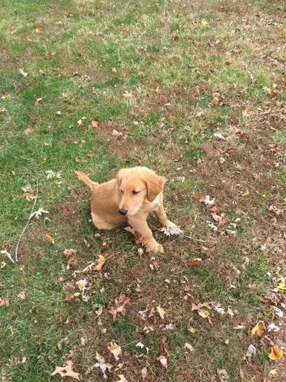

Hi! My name is Yoshi! I am a Golden Retirever and my master is Scott. During the course of a day, I spend my time doing a range of activities. Below are a few of my favorite.
Chewin' My Bone
First and foremost, my favorite activity of all is gnawing on my USDA select, grade "A" femur bone. This chunk of deliciousness is covered in red meat and filled with tasty bone marrow. I do my best to gulp up all the meat I can, and when I get tired I bury my bone. My bone means a lot to me, so I make sure to bury it where no one can find it. Woof! Woof!
Barkin' At The Neighbors
Another one of my favorite activites is make sure my master knows I'm patrolling the yard. I do this by barking at the neighbors every chance I get, even late at night. I take my job very seriously and I can sound pretty fierce. Woof! Woof!
Diggin' Up The Yard
Finally, I love to dig moles up out of the yard and chew em' up. These pesky rodents like to sneak into my yard when they think no one is paying attention. Little do they know, my nose can pick up their scent. When I get the scent of one of these pests, I can easily locate and dig em up. With a side of dirt, they really make a great meal! Woof! Woof!